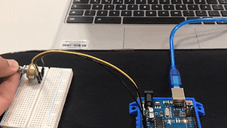

Sobre o projeto

O que um potenciômetro?
No vasto campo da eletrônica e engenharia, existem dispositivos que desempenham papéis fundamentais em uma variedade de circuitos e sistemas. Um desses componentes versáteis é o potenciômetro, muitas vezes conhecido como "pot" para abreviar. O potenciômetro é um dispositivo de controle variável que desempenha um papel crucial em ajustes e medições precisas de tensão, corrente e outros parâmetros elétricos. Seu funcionamento simples torna-o uma ferramenta indispensável em uma infinidade de aplicações, desde eletrônica básica até seu headset gamer.
Funcionalidades do Potenciômetro:
Um potenciômetro é composto por uma resistência ajustável e um cursor móvel que percorre a extensão dessa resistência. Isso permite que ele seja utilizado para ajustar níveis de tensão, volume, brilho, ganho e vários outros parâmetros em sistemas eletrônicos. Sua operação é baseada na variação da resistência elétrica, que pode ser ajustada manualmente ou automaticamente em alguns casos. Essa característica singular confere ao potenciômetro uma gama diversificada de funcionalidades em diferentes cenários.
Exemplos de Aplicações:
- Eletrônica de Áudio: Potenciômetros são encontrados em amplificadores, mixers, sistemas de som e em seu headset gamer, onde são usados para controlar o volume e a tonalidade.
- Eletrônica Automotiva: São empregados em painéis de controle de carros para ajustar o brilho das luzes do painel e a intensidade do som do sistema de áudio.
- Eletrônica Industrial: Utilizados em maquinários e sistemas de automação para ajustar velocidades, níveis de pressão e outros parâmetros críticos.
- Eletrônica Residencial: Presentes em dispositivos como ventiladores de teto, fornos elétricos e sistemas de climatização, permitindo ajustes precisos.
- Instrumentação Científica: Encontrados em equipamentos de medição e laboratórios, para calibrar e ajustar instrumentos de medida.
Participantes do Projeto:
Este projeto sobre o que é um potenciômetro teve a participação de 5 alunos. São eles:
- Ed. Oliveira 18
- Arthur Zuliani 10
- Giorgio Riboldi 22
- Ed. Antonio
- Carlos Eduardo 39
Logo abaixo, você verá a nossa montagem de um circuito que envolve esse componente.